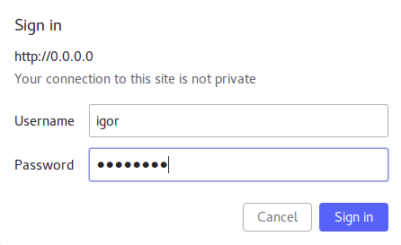
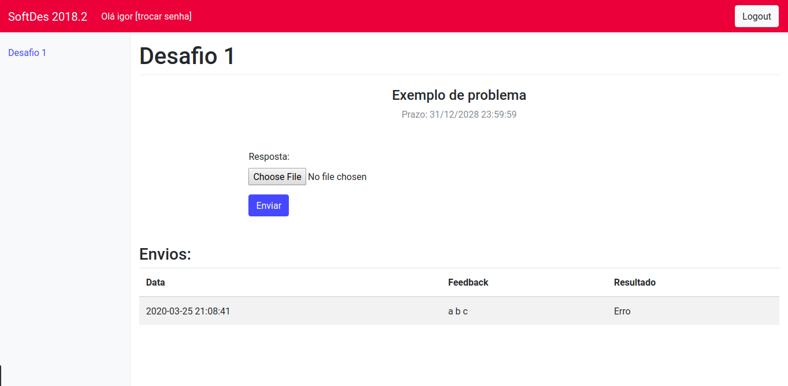

Students User Guide
Start Up
- Start a Desafios webserver tutorial.
- After starting Desafios Flask webserver, goto url and use your login ans password then click sign in

Sending a solution
- After Sign In you can click in the desired challenge and subbmit a solution
select chose file and send your solution to the server


- After sending the file you can check the feedback in "Envios" section, your solution will show OK if no error were found and your solution runs

Wrong solution
- If your solution is considered wrong you can check again in Feedback session
